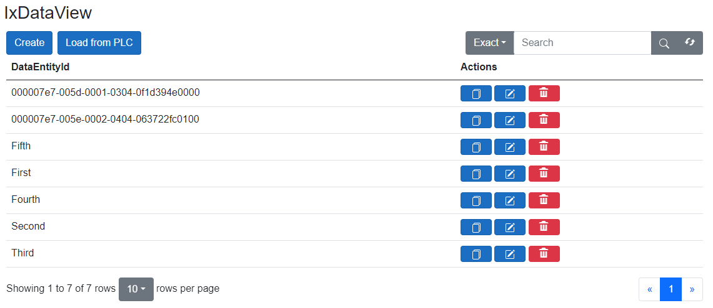
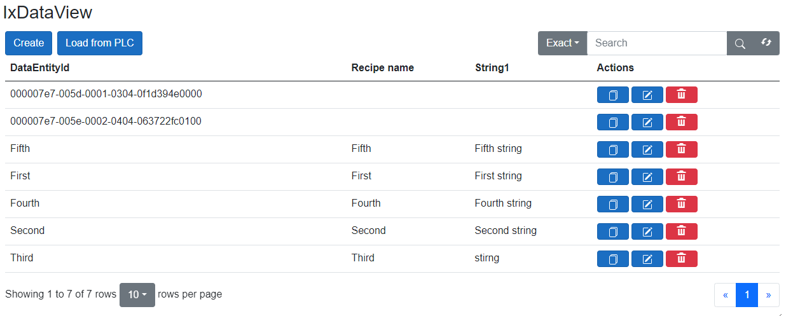
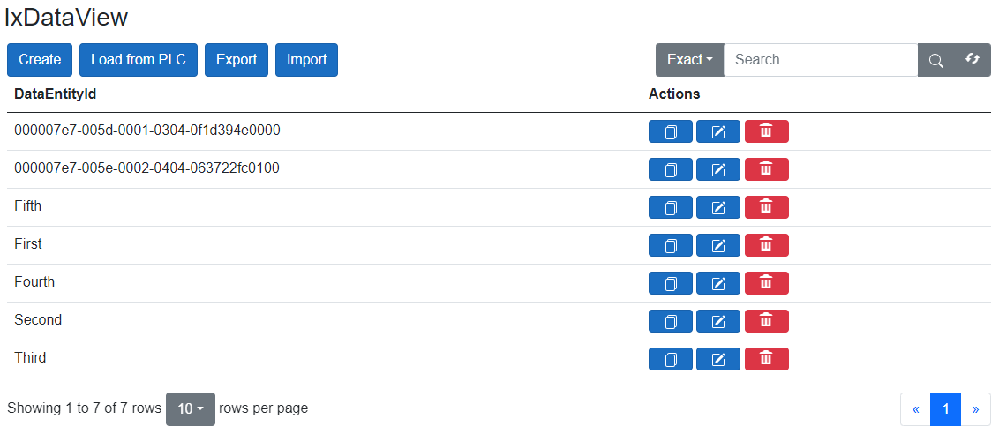
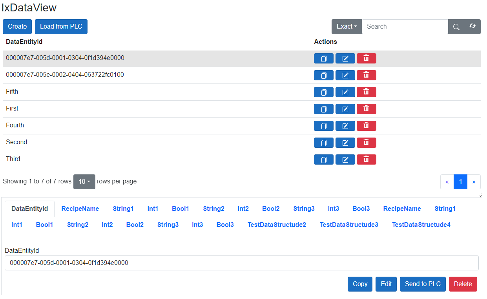

AxoDataFragmentExchange
Fragment data exchange allows to group of multiple data managers into a single object and perform repository operations jointly on all nested repositories.
Data fragment exchange manager
We must create a class extending the AxoDataFragmentExchange for the data fragment exchange to work.
CLASS ProcessDataManager EXTENDS AXOpen.Data.AxoDataFragmentExchange
VAR PUBLIC
{#ix-attr:[AXOpen.Data.AxoDataFragmentAttribute]}
SharedHeader : SharedDataHeaderManger;
{#ix-attr:[AXOpen.Data.AxoDataFragmentAttribute]}
Station_1 : Station_1_ProcessDataManger;
END_VAR
END_CLASS
Nesting AxoDataExchanger(s)
AxoDataFragmenExchange can group several data managers where each can point to a different repository. Nested data managers must be set up as explained here.
Note
Note that each data manager must be annotated with AXOpen.Data.AxoDataFragmentAttribute that will provide information to the parent manager that the member takes part in data operations.
Important
First data manager declared as a fragment is considered a master fragment. The overview and list of existing data are retrieved only from the master fragment.
Initialization and handling in the controller
We will now need to create an instance of AxoDataFragmentExchange in a context object (AxoContext) (or as a member of another class that derives from AxoObject). We will also need to call AxoDataFragmentExchangeContext in the Main method of appropriate context.
CLASS AxoDataFragmentExchangeContext EXTENDS AXOpen.Core.AxoContext
VAR PUBLIC
ProcessData : ProcessDataManager;
END_VAR
METHOD PROTECTED OVERRIDE Main
// This is required to run cyclically. Method provides handling of data exchange tasks.
ProcessData.Run(THIS);
END_METHOD
END_CLASS
Instantiate context in a configuration
CONFIGURATION MyConfiguration
VAR_GLOBAL
_myContext : AxoDataFragmentExchangeContext;
END_VAR
END_CONFIGURATION
Execute the context in a program.
PROGRAM MAIN
VAR_EXTERNAL
_myContext : AxoDataFragmentExchangeContext;
END_VAR
_myContext.Run();
Data exchange initialization in .NET
At this point, we have everything ready in the PLC.
If the nested data exchange object does not have the repository set previously, we will need to tell the to fragment manager wich repositories we be used by in data exchange. We will work with data stored in files in JSON format.
var scatteredDataBuilder =
Entry.Plc.AxoDataFragmentExchangeContext.ProcessData.CreateBuilder<AxoDataFramentsExchangeDocuExample.ProcessDataManager>();
// Setting up repositories
scatteredDataBuilder.SharedHeader.SetRepository(new JsonRepository<Pocos.AxoDataFramentsExchangeDocuExample.SharedDataHeaderData>(
new AXOpen.Data.Json.JsonRepositorySettings<Pocos.AxoDataFramentsExchangeDocuExample.SharedDataHeaderData>(Path.Combine(Environment.CurrentDirectory, "bin", "data-framents-docu", "set"))));
scatteredDataBuilder.Station_1.SetRepository(
new JsonRepository<Pocos.AxoDataFramentsExchangeDocuExample.Station_1_Data>(
new AXOpen.Data.Json.JsonRepositorySettings<Pocos.AxoDataFramentsExchangeDocuExample.Station_1_Data>(Path.Combine(Environment.CurrentDirectory, "bin", "data-framents", "fm"))));
Note
MyData should be of type from Pocos.
Usage
Now we can freely shuffle the data between PLC and the local folder.
CLASS UseManager
VAR
_create : BOOL;
_read : BOOL;
_update : BOOL;
_delete : BOOL;
_id : STRING;
END_VAR
METHOD Use
VAR_IN_OUT
DataFragmentManager : ProcessDataManager;
END_VAR
IF(_create) THEN
IF(DataFragmentManager.Create(_id).IsDone()) THEN
_create := FALSE;
END_IF;
END_IF;
IF(_read) THEN
IF(DataFragmentManager.Read(_id).IsDone()) THEN
_read := FALSE;
END_IF;
END_IF;
IF(_update) THEN
IF(DataFragmentManager.Update(_id).IsDone()) THEN
_update := FALSE;
END_IF;
END_IF;
IF(_delete) THEN
IF(DataFragmentManager.Delete(_id).IsDone()) THEN
_delete := FALSE;
END_IF;
END_IF;
END_METHOD
END_CLASS
Data visualization
Automated rendering using RenderableContentControl
With Command presentation type, options exist for adding, editing, and deleting records.
<RenderableContentControl Context="Entry.Plc.AxoDataFragmentExchangeContext.ProcessData" Presentation="Command"></RenderableContentControl>

If you use Status presentation type, data will be only displayed and cannot be manipulated.
<RenderableContentControl Context="Entry.Plc.AxoDataFragmentExchangeContext.ProcessData" Presentation="Status"></RenderableContentControl>

Custom columns
There is a possibility to add custom columns if it is needed. You must add AXOpen.Data.ColumnData view as a child in DataView. The BindingValue must be set in ColumnData and contains a string representing the attribute name of custom columns. If you want to add a custom header name, you can set the name in HeaderName attribute. Also, there is an attribute to make the column not clickable, which is clickable by default. The example using all attributes:
<DataExchangeView Vm="VM" Presentation="Command">
<ColumnData HeaderName="Some data" BindingValue="SomeData" Clickable="false" />
<ColumnData HeaderName="A number" BindingValue="SomeNumber" Clickable="false" />
<ColumnData HeaderName="Yes/No" BindingValue="SomeBool" Clickable="false" />
</DataExchangeView>
When adding data view manually, you will need to create ViewModel:
@code {
protected DataExchangeViewModel VM { get; } = new() { Model = Entry.Plc.AxoDataFragmentExchangeContext.ProcessData };
}

Note
Custom columns can only added from master fragment (first declared repository).
Export/Import
If you want to be able to export data, you must add CanExport attribute with true value. Like this:
<DataView Vm="@ViewModel.DataViewModel" Presentation="Command" CanExport="true" />
With this option, buttons for export and import data will appear. After clicking on the export button, the .zip file will be created, which contains all existing records. If you want to import data, you must upload .zip file with an equal data structure as we get in the export file.

For a better user experience, it is strongly recommended to clean the Temp directory when starting the application. The best way to do this is to add the following lines to the "Program.cs" file:
// Clean Temp directory
IAxoDataExchange.CleanUp();
Important
Export and import function will create high load on the application. Don't use with large datasets. These function can be used only on a limited number (100 or less) documents. Typical used would be for recipes and settings, but not for large collections of production or event data.
Modal detail view
The Detail View is default shown like modal view. That means if you click on some record, the modal window with a detail view will be shown. If necessary, this option can be changed with ModalDetailView attribute. This change will show a detail view under the record table. Example with ModalDetailView attribute:
<DataExchangeView Vm="@ViewModel.DataViewModel" Presentation="Command" ModalDetailView="false" />
